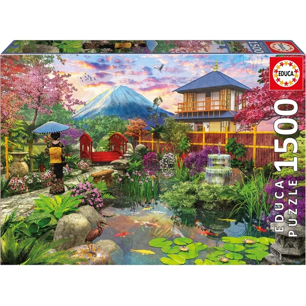
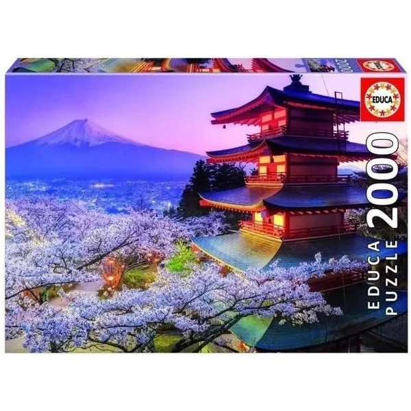
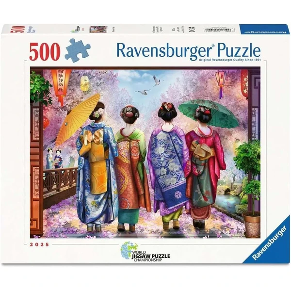
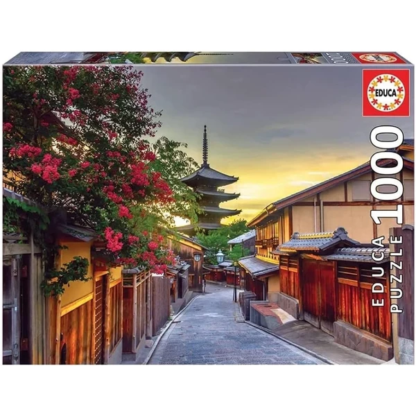

✨ Guía especial
Un puzzle con motivos de Japón es una forma muy visual de acercarse a otra cultura: el contorno del país, el Monte Fuji, los templos o los cerezos en flor se convierten en una excusa perfecta para hablar de geografía y costumbres mientras se monta pieza a pieza, igual que ocurre con otros puzzles de mapas y monumentos de esta guía.
Los jardines japoneses, con puentes rojos, estanques de carpas koi, linternas de piedra y cerezos en flor, son otro de los motivos más buscados: su composición serena y detallada los convierte en una opción decorativa y un reto de montaje entretenido.

Jardín Japonés Ver en Amazon →El Monte Fuji, los campos de cerezos en flor o las escenas de templos tradicionales son algunos de los paisajes más buscados en este formato, con un componente visual muy atractivo tanto para colgar en pared como para el propio reto de montaje.

Monte Fuji Ver en Amazon →Completan esta categoría otros motivos tradicionales sin vinculación a ninguna franquicia: geishas, torii (los arcos tradicionales de los templos sintoístas), pagodas, y escenas de la vida cotidiana japonesa. Son una alternativa vistosa para quien ya tiene el mapa o el paisaje más buscados.

Geisha Ver en Amazon →
Pagoda Ver en Amazon →Al ser en su mayoría productos de madera, si buscas más opciones en este material también puede interesarte nuestra guía de puzzles de madera. Y si lo que te interesa es el enfoque de geografía y cultura en general, consulta también nuestra guía de puzzles de mapas y monumentos.